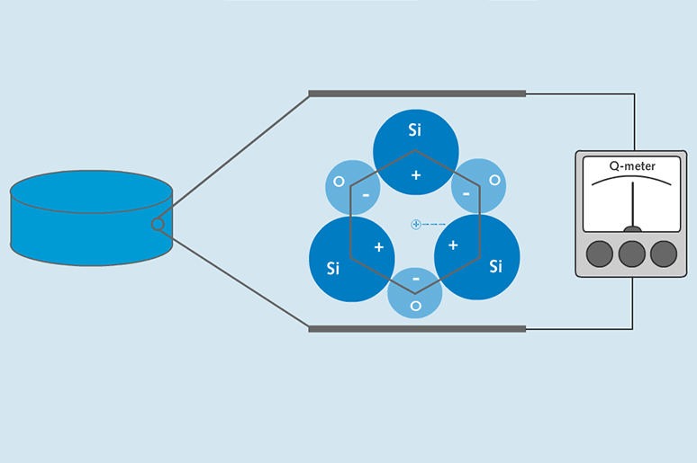
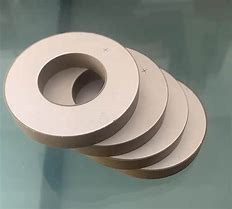
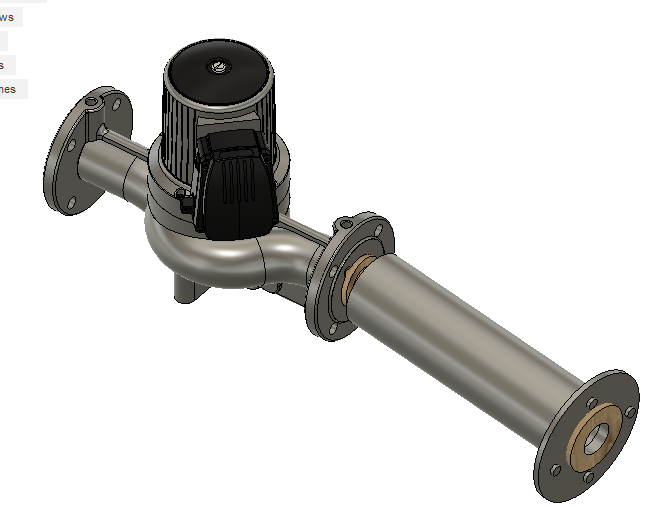
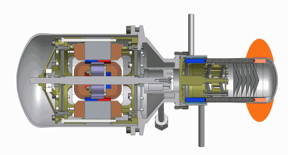
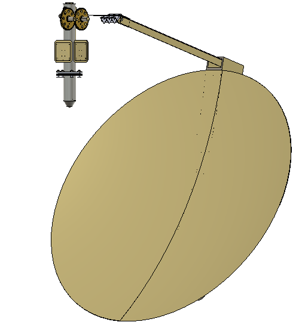

Implemented Fusion360 and Python to model various configurations
A piezoelectric crystall is any crystal that generates electricity when pressure is applied

The following picture shows commercial piezoelectric ceramics

My initial idea was to find whether placing piezoelectric ceramics at the pipe entrance where the pressure drop is the greatest, would generate enough power to run electric pumps. This configuration is illustrated below.

Consequently, I was introduced to thermoelectric generators and stirling engines. Therefore I came up with the second configuration inspired by NASAs Radioisotope thermoelectric generator to make a piezoelectric generator that produces power from solar energy.

This mechanical energy can be transformed into electricity by placing a piezoelectric crystal at the tip of the displacer piston, since by doing so the piston would hit the crystal repetitively and by using a permanent magnet as the power piston, and surround it with cupper wires so that an electric current would be induced into the wires as the power piston moves up and down.
As mentioned before the heat source would be solar energy and below you can observe a possible configuration of how to harness it.

In this case the piezoelectric generator would be placed at the centre of the focal point where the heat is concentrated